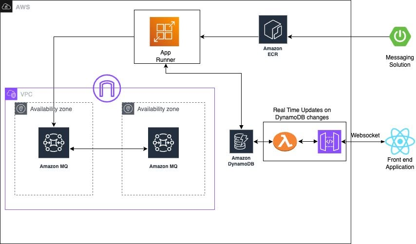
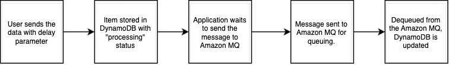

Hello everyone in the FCAJ group. While researching asynchronous message processing architectures on AWS, I came across a highly detailed and practical architecture document. I would like to summarize and analyze the key technical aspects of this design for everyone’s reference and discussion.
Organizations constantly need message processing systems capable of prioritizing critical business operations while handling routine tasks efficiently. Especially when dealing with low-latency tasks—such as urgent orders from high-value customers or critical system alerts—prioritizing urgent messages is mandatory. The challenge lies in routing messages based on priority to honor business rules while providing real-time feedback to users.
To solve this without adding operational complexity, AWS proposes a solution using fully managed services. This architecture allows engineering teams to focus on business logic rather than infrastructure management, and is composed of three core services:

The system implements intelligent routing based on three levels of JMS message priority to guarantee critical messages are processed immediately:
This architecture implements configurable delay processing at the application level. Asynchronous delay processing manages a thread pool for concurrent execution and handles errors gracefully using a two-tier retry mechanism for maximum reliability.

The standard priority message processing path handles messages with configurable delays utilizing JMS asynchronous processing. The message waits for the specified delay before entering the Amazon MQ queue where it is processed.
The solution provides real-time status updates so users can track the progress of their requests. The system uses Amazon DynamoDB Streams for change data capture (CDC). This stream triggers an AWS Lambda function to push updates to a React front-end application via Amazon API Gateway WebSocket connections.
The AWS documentation highlights several security practices for production environments:
During operation, if messages are not processed in the correct priority order, system engineers should verify that the JMS priority is configured correctly using the message.setJMSPriority() parameter (or equivalent message.set). Additionally, ensure that CLIENT_ACKNOWLEDGE mode is configured correctly, and inspect the concurrent consumer settings on the queues.
Applying this architecture using Infrastructure as Code (IaC) ensures consistent deployments across multiple environments, from development to production.
This solution demonstrates how to build a production-ready priority-based messaging system using AWS managed services. By combining Amazon MQ priority queues with DynamoDB real-time streams and App Runner serverless compute, this design delivers a robust architecture that processes messages intelligently based on business priorities. Implementing application-level delays with priority bypass ensures urgent messages get immediate attention, while the two-tier retry mechanism provides high reliability. Real-time WebSocket updates keep users informed, creating a responsive and transparent system.
References:
(This is a summary of an AWS blog post I read. Feel free to share your thoughts or point out any mistakes!)